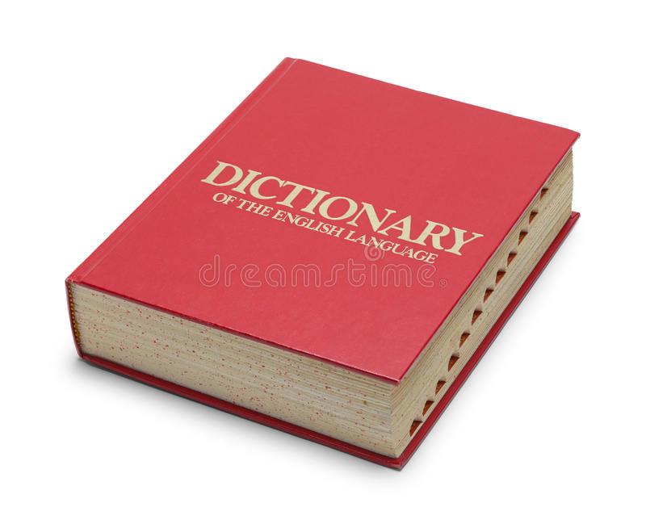

<h1 style="color:darkgoldenrod;"> What does levithan mean? </h1>


<h1 style="color:teal;">The name Leviathan comes from the Hebrew Livyatan, which comes from a root that means “to twist, turn, wind, or coil.” Today the name is often used to refer generally to a sea monster or to any gigantic powerful thing.<h1/>

  <body style="background-color:black;">

  
<a href="Informat.html">   <h4> -What does levithan symbolize in the bible<h4/> 
 <h4>--------------------------------------------------------------------------</h4>
  <a href="Hi.html">   <h4> -What does levithan mean<h4/> 
    <h4>--------------------------------------------------------------------------</h4>
      <a href="BK69.html">   <h4> -What is levithan<h4/> 
 <h4>--------------------------------------------------------------------------</h4>
    <a href="MYBRO.html"    <h4> My friends </h4>
        <h4>--------------------------------------------------------------------------</h4>
    <a href="Imagegallery.html"    <h4>Gallery </h4>